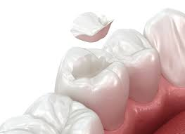
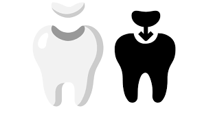
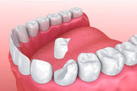

Incrustaciones Dentales Estéticas
Salva tu diente con la máxima calidad y a una fracción del costo real.

Piezas a la medida que encajan perfectamente.
Si tienes un diente muy desgastado o con una caries muy grande, una incrustación de cerámica es la mejor opción para reconstruirlo y que se vea 100% natural.
Al atenderte con nosotros en PractiDent, nuestra mano de obra especializada es totalmente gratuita; tú solo cubres el material del laboratorio.
Tu Ahorro es Gigante
Clínicas Privadas
$4,000 - $6,100
Te cobran ganancia del dentista, renta y materiales.
Con PractiDent
$900 - $1,500
Pago directo de materiales de laboratorio. **Cero cobro por mano de obra o supervisión.**
¿Por qué la diferencia? ¿Hay algún truco?
No hay ningún truco. En una clínica privada pagas la ganancia del dentista, la renta y los materiales. Con nosotros, ese costo extra desaparece. Nosotros ponemos nuestro conocimiento, tiempo y la estricta supervisión de especialistas totalmente gratis para ti. Tu dinero no es ganancia para nosotros; va 100% directo a pagarle al laboratorio dental externo que fabricará tu pieza a la medida exacta.
Trato humano y flexible (100% Personalizado)
Cada diente es diferente. El costo final lo platicamos en persona en tu primera cita para llegar a un acuerdo que sea cómodo para tus posibilidades. Queremos que el dinero no sea un obstáculo.
¿Qué es exactamente?
Imagina que a tu diente le falta un pedazo muy grande. En lugar de rellenarlo con una simple pasta (resina) que se puede caer o romper, mandamos hacer al laboratorio una "pieza de rompecabezas" a la medida, fabricada en cerámica pura. Esta pieza encaja perfectamente y reconstruye tu diente por completo.

¿Por qué es mejor que un empaste normal?
-
Máxima duración: La cerámica es muchísimo más resistente que una resina; te durará muchos años y le devuelve la fuerza a tu muela para que comas sin miedo.
-
Estética perfecta: El material no se mancha y copia el color exacto de tus otros dientes. Nadie notará que la tienes. Usamos el mismo material de las mejores clínicas privadas.
-
Protege tu diente natural: Ayuda a conservar la mayor cantidad de tu diente sano sin tener que rebajarlo todo para poner una corona completa.

Proceso Seguro (4 Pasos)
Valoración y Acuerdo
Revisamos tu diente, el profesor aprueba el caso y acordamos juntos el costo exacto de tu cooperación.
Preparación y Molde
Preparamos el diente y tomamos una impresión (un molde) muy precisa.
Fabricación
El laboratorio dental externo construye tu incrustación a la medida exacta.
Colocación Final
Cementamos (pegamos) la incrustación en tu diente, ajustamos tu mordida para que sientas todo perfecto y revisamos que quede impecable.
¿Listo para dar el primer paso?
Escríbenos para agendar tu cita de valoración en nuestros horarios clínicos y salva tu muela con la mejor calidad.
Agendar mi ValoraciónAtención exclusiva en horarios de práctica supervisada.